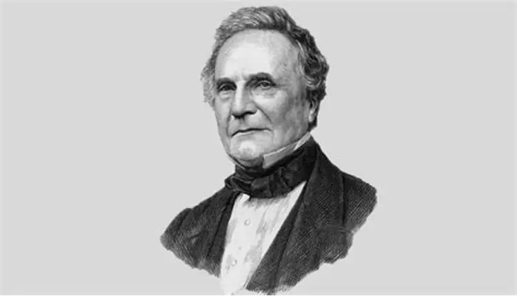

Charles Babbage

Charles Babbage(26 December 1791 - 18 October 1871) was an English polymath. A mathematician, philosopher, inventor and mechanical engineer, Babbage originated the concept of a digital programmable computer.
Babbage is considered by some to merit the title of "father of the computer". He is credited with inventing the first mechanical computer, the difference engine, that eventually led to more complex electronic designs, though all the essential ideas of modern computers are to be found in his analytical engine, programmed using a principle openly borrowed from the Jacquard loom.